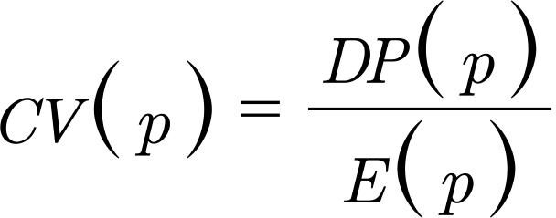

Abstract
OBJECTIVE
: To compare the efficiency and accuracy of sampling designs including and excluding the sampling of individuals within sampled households in health surveys.
METHODS
: From a population survey conducted in Baixada Santista Metropolitan Area, SP, Southeastern Brazil, lowlands between 2006 and 2007, 1,000 samples were drawn for each design and estimates for people aged 18 to 59 and 18 and over were calculated for each sample. In the first design, 40 census tracts, 12 households per sector, and one person per household were sampled. In the second, no sampling within the household was performed and 40 census sectors and 6 households for the 18 to 59-year old group and 5 or 6 for the 18 and over age group or more were sampled. Precision and bias of proportion estimates for 11 indicators were assessed in the two final sets of the 1000 selected samples with the two types of design. They were compared by means of relative measurements: coefficient of variation, bias/mean ratio, bias/standard error ratio, and relative mean square error. Comparison of costs contrasted basic cost per person, household cost, number of people, and households.
RESULTS
: Bias was found to be negligible for both designs. A lower precision was found in the design including individuals sampling within households, and the costs were higher.
CONCLUSIONS
: The design excluding individual sampling achieved higher levels of efficiency and accuracy and, accordingly, should be first choice for investigators. Sampling of household dwellers should be adopted when there are reasons related to the study subject that may lead to bias in individual responses if multiple dwellers answer the proposed questionnaire.
Health Surveys, methods; Population Surveys; Cluster Sampling; Sampling Studies
INTRODUCTION
In population-based surveys in which multiple stages are selected, the household is always used as a sampling unit at one of these stages. Considering that people are the elements which are of real interest in such surveys, the household should be viewed as a cluster, as it encompasses various elements.
There are, then, two options for sample designs which could be used: to consider the household as the final sampling unit and include all inhabitants meeting the established criteria in the sample a a Instituto Brasileiro de Geografia e Estatística (BR). Pesquisa Nacional por Amostra de Domicílios. Brasília (DF); [s.d.]. , b b Centers for Disease Control and Prevention (US). National Health Interview Survey. Washington (DC); [s.d.]. , c c National Centre for Social Research (UK). Health Survey for England. Londres; [s.d.]. or to consider including one more stage in the selection and select one or more inhabitant per household. d d Fundação Oswaldo Cruz (BR). Pesquisa Mundial de Saúde no Brasil. Rio de Janeiro; [s.d.]. , e e Centers for Disease Control and Prevention (US). National Health and Nutrition Examination. Washington (DC); [s.d.]. , f f Institut de Veille Sanitaire (FR). Etude Nationale Nutrition Santé. Paris ; [s.d.]. , g g Statistics Canadá (CA). Canadian Community Health Survey. Ottawa; [s.d.].
The former is the most commonly used option
4
4 Clark RG, Steel DG. Sampling within households in household surveys. J Royal Statist Soc Series A. 2007;170(1):63-82. DOI:10.1111/j.1467-985X.2006.00434.x
https://doi.org/10.1111/j.1467-985X.2006...
and the main advantage is that, due to there being no intra-household selection, it is possible to maintain the self-weighting samples for those that had originally been designed with this property. On the other hand, interview various individuals in the same family may diminish the precision of the estimates, as a consequence of homogeneity within the households. With inter-household sampling and the consequent inclusion of a greater number of households in the sample, this problem would be avoided. It would, however, be necessary to use sampling weights to compensate for the different probabilities of selection, which also implies lower precision of the estimates.
Selecting individuals in the household is the most appropriate procedure when there are sensitive issues in the questionnaire and supposes that the responses of one interviewee may influence other family members responses.
5
5 Clark RG, Steel DG. The effect of using household as a sampling unit. Int Statist Rev. 2002;70(2):289-314. Some pieces of research in which the questionnaire is excessively long have adopted this approach, believing that the rates of response may be affected if the interview is perceived as onerous by the respondents.
5
5 Clark RG, Steel DG. The effect of using household as a sampling unit. Int Statist Rev. 2002;70(2):289-314. In these cases, the selection usually takes place using the procedures proposed by Kish, adapted or otherwise,
2
2 Berquó ES. Selección de unidades de información en encuestas demográficas: un método para construir tablas de sorteio. Santiago: CELADE; 1975 (Notas de Población, 3).
,
9
9 Kish L. A procedure for objetive respondent selection within the household. Amer Statist Assoc J. 1949;44(247):380-7. DOI:10.1080/01621459.1949.10483314
https://doi.org/10.1080/01621459.1949.10...
or based on techniques for selecting individuals based on the dates of their birthdays.
13
13 O’Rourke D, Blair J. Improving random respondent selection in telephone surveys. J Marketing Res. 1983;20(4):428-32.
,
14
14 Oldendick RW, Bishop GF, Sorenson SB, Tuchfarber AJ. A comparison of the Kish and last birthday methods of respondent selection in telephone surveys. J Official Statist. 1988;4(4):307-18.
,
16
16 Salmon CT, Nichols JS. The next-birthday method of respondent selection. Public Opinion Q. 1983;47(2):270-6. DOI:10.1086/268785
https://doi.org/10.1086/268785...
There is little literature on intra-household selection. There is a lack of studies discussing how many individuals should be selected in the households and the impact of the various available alternatives on the statistics produced.
The aim of this study was to compare the efficiency and accuracy of sample designs without inter-household selection and selecting one single individual.
METHODS
The starting point was the household survey on access to health care services in Baixada Santista, SP, Southeastern Brazil, which took place between 2006 and 2007, in which 6,826 interviews were conducted in 2,189 households in 100 census tracts, in which all residents in the selected household were included in the sample. h h Alves MCGP, Escuder MML. Plano de amostragem. In. Escuder MML, Monteiro PHN, Pupo LR. Acesso aos serviços de saúde em municípios da baixada santista. São Paulo: Instituto de saúde; 2009. (Temas em saúde coletiva, 8).
The sample size and the inclusion of all household residents, with the exception of those which refused to participate in the survey, enabled this to became the study population. Thus, 1,000 samples were selected from the data set from the survey following each of the designs in question, with and without intra-household sampling. In each sample, estimates were obtained for the two population groups: one group was of adults (aged 18 to 59) and one of adults and older individuals together (aged 18 and over). These groups were chosen as they often constituted the target population of the health survey.
The first design consists of three stages: census tract, household and individual. Forty census tracts were selected, with probability proportional to size, then 12 households per tract and one person per household. The planned sample size was 480 individuals. To compensate for the difference in selection probability, weights were introduced equivalent to the number of adults or adults and older individuals in the selected households.
The second design consists of two stages: census tract and household. In this case, 40 census tracts were also selected with a probability proportional to size and six households per tract for adults and five or six households (mean of 5.66) for adults and older individuals. There was no sampling within the household. All of the individuals of the population groups in question residing in the selected households were interviewed. Considering, respectively, ratios of two adults and 2.12 adults and elderly individuals per household, it was expected that there would be 480 interviews in each sample.
The Stata software version 11.2 was used to produce a looping structure capable of producing the 1,000 samples used in each of the designs in question. The runiform function was used to establish a random starting point from which to begin the selection of tracts and, later, the households. The sample command was used to randomly select a resident within each of the households in the intra-household selection sampling plan.
The sampling fractions used in selecting the samples and in other aspects of the sampling plans are shown in Table 1.
Aspects referent to sample design. Baixada Santista Metropolitan Area, SP, Southeastern Brazil, 2006-2007.
To obtain the estimates used, 11 health indicators were chosen according to the Household Survey on Health Care Service Access in Baixada Santista, i i Escuder MML, Monteiro PHN, Pupo LR. Acesso aos serviços de saúde em municípios da baixada santista. São Paulo: Instituto de saúde; 2009. (Temas em saúde coletiva, 8). grouped in three categories, namely: 1. Health situation (self-evaluated health as bad or very bad; not carrying out usual activities in the preceding 15 days; reporting high blood pressure; reporting diabetes; alcohol intake in the preceding three months); 2. Use of and access to health care services (use of high blood pressure medication in the preceding week; need for health care services in the preceding 15 days; using health care services in the preceding 15 days; some kind of medicine prescribed in this appointment) and 3. Socio-economic conditions (health insurance and having eight or more consumer goods).
Measures of precision and bias in the estimates for each indicator were calculated in the two final sets of 1,000 samples selected under both sample designs.
The mean of frequency distribution, estimating the expected value of the estimator of the parameter P, was calculated using: , when p i is the estimated proportion in the sample i. Standard error for the estimator was calculated using: ; bias using: Vic(p)=E(p)-P, and the mean square error, indicator of the accuracy of the estimator, using: EQM(p)=[DP(p)]2+[Vic(p)]2.
The sample designs were compared using relative measures. 10 10 Kish L. Survey sampling. New York: John Wiley & Sons; 1965. , 12 12 Mohadjer L, Curtin LR. N. Balancing sample design goals for the National Health and Nutrition Examination Survey. Surv Methodol. 2008;34(1):119-26. Precision was compared using the coefficient of variation,  , bias using the relative bias (ration between the bias and the mean) , and accuracy through relative mean square error, . To detect the impact of the bias on the inferences, the confidence interval, the ratio between the bias and the standard error was used, adopting the criterion proposed by Cochran. 6 6 Cochran WG. Sampling techniques. 3. ed. New York: John Wiley & Sons; 1977. If the bias was lower than a tenth of the standard error of the estimation (ratio below 0.10), this was not considered significant.
The efficiency of a design concerns the degree of fit between the requirements of precision and bias of the estimates and the cost of obtaining them. Kish 10 10 Kish L. Survey sampling. New York: John Wiley & Sons; 1965. proposes that the comparison between the cost of designs which select one single person and those with no intra-household selection be shown using the equation: cost = nc + m∙dc, in which c is the basic cost per element (person), which are the same for the two designs, such as: applying questionnaires and data processing; dc is the cost of including one household, such as: cost of asking permission to enter the residence, of getting the residents’ cooperation and of drawing up a list of residents; n is the number of individuals and m is the number of households.
RESULTS
The population proportions were calculated for the study variables and the mean of the estimates were obtained from the two designs in question, with and without intra-household sampling for both population groups in question, adults and adults and the elderly (Table 2).
The differences between the expected value of the estimator and the population parameter, equivalent to the estimation bias, were similar for both studies. This is shown in the proximity of the estimates of relative bias. The differences, apart from one, are in the third decimal place (Table 3). The ratios between bias and the standard error were lower than 0.10, indicating non-significant bias for both sample designs.
The comparison between the coefficients of variation indicates that the existence of intra-household selection leads to increased sampling error for the majority of variable (Table 4). This result is reflected in the measures of accuracy. For 80.0% of the variables, the estimates of relative mean square error were lower in the design which did not select within the households.
Coefficient of variation [CV(p)] and relative mean square error [EQMR(p)], according to the sample design with intra-household selection (del1) and without it (del2). Baixada Santista Metropolitan Area, SP, Southeastern Brazil, 2006-2007.
With regards to the cost, considering the number of individuals included in the sample for both designs, 480, and the number of households: 480 in the design with intra-household selection and 240 (for adults) and 226 or 227 (for adult and the elderly) in the design without intra-household selection, the costs were higher in the latter. For adults, 240 more households were visited; for adults and the elderly together, 254 more were visited.
DISCUSSION
The results of this study indicate that, in the conditions in which the samples were selected, the design which did not include inter-household selection is superior in terms of the accuracy as regards selecting one person per household. Although the differences are not large, the lower cost of the first design means it has an advantage over the other, confirming its superiority. In general, an optimum design is developed determined by the effect of the cost on the variance of alternative sampling procedures and choosing that which minimizes the variance for a fixed cost. 12 12 Mohadjer L, Curtin LR. N. Balancing sample design goals for the National Health and Nutrition Examination Survey. Surv Methodol. 2008;34(1):119-26.
The mean number of adults within the households and of adults and the elderly, together, were low: 2 and 2.12 respectively. In this situation, the concentration of interviews within the households is not large, which favors the option of not carrying out further selection.
10
10 Kish L. Survey sampling. New York: John Wiley & Sons; 1965. This occurs in diverse surveys, both in those which are directed at specific population groups,
3
3 Berquó ES, Garcia S, Lima L. Reprodução na juventude: perfis sociodemográficos, comportamentais e reprodutivos na PNDS 2006. Rev Saude Publica. 2012;46(4):685-93. DOI:10.1590/S0034-89102012005000048
https://doi.org/10.1590/S0034-8910201200...
,
17
17 Silva NN. Processo de amostragem. In: Lebrão ML, Duarte YAO. O projeto SABE no Município de São Paulo: uma abordagem inicial. Brasília (DF): Organização Pan-Americana da Saúde; 2003. and in those which define domains of age and sex.
1
1 Bastos TF, Alves MCGP, Barros MBA, Cesar CLG. A saúde dos homens: desigualdades sociais em estudo de base populacional. Cad Saude Publica. 2012;28(11):2133-42. DOI:10.1590/S0102-311X2012001100013
https://doi.org/10.1590/S0102-311X201200...
,
15
15 Roncalli AG, Silva NN, Nascimento AC, Freitas CHSM, Casotti E, Peres KG, et al. Aspectos metodológicos do Projeto SBBrasil 2010 de interesse para inquéritos nacionais de saúde. Cad Saude Publica. 2012;28Suppl:40-57. DOI:10.1590/S0102-311X2012001300006
https://doi.org/10.1590/S0102-311X201200...
In these, intra-household homogeneity is not relevant as the analyses are conducted for specific population groups of which there are, generally, low levels of clustering at a household level.
12
12 Mohadjer L, Curtin LR. N. Balancing sample design goals for the National Health and Nutrition Examination Survey. Surv Methodol. 2008;34(1):119-26. Krenzke et al
11
11 Krenzkle T, Li L, Rust K. Evaluating within household selection rules under a multi-stage design. Surv Methodol. 2010;36(1):111-9. confirm that, when there are multiple domains of study, it is often better to interview more than one person within the household.
The cluster effect is one of the factors which increase variance in the estimates obtained in the surveys. However, for multi-stage samples, the impact of homogeneity within the households on variance is affected by the homogeneity which exists in the anterior sampling units. Thus, the incremental impact of clusters within households may be amortized by the domination of the components of variance in the first stage of selection. 11 11 Krenzkle T, Li L, Rust K. Evaluating within household selection rules under a multi-stage design. Surv Methodol. 2010;36(1):111-9.
In this study, only two indicators for which equal values were expected for residents in the same household (having health insurance and number of consumer goods in the residence) showed sampling errors greater in the design without intra-household selection. Although the study of these indicators is not an object of health research, it is possible to suppose that there are “health” indicators for which intra-household correlation would be extremely high, as occurred when estimates are exactly the same for all household members. In these situations, the superiority of the design without intra-household selection would cease to exist.
Krenzke et al 11 11 Krenzkle T, Li L, Rust K. Evaluating within household selection rules under a multi-stage design. Surv Methodol. 2010;36(1):111-9. evaluated diverse rules for selection referring to the number of adults selected within the households in four-stage sample designs: selecting one adult irrespective of the number existing; selecting one adult if there are two or fewer and selecting two for more adults; selecting one adult if there are three or fewer, and two if there are more; selecting one adult if there are four or fewer, and two if there are more; and selecting one or two adults, when the sample size is a fraction. The authors proposed a form of computing the design effect due to household homogeneity. Thus, they measured the percentage reduction in the variance/cost function for the strategic variables proposed in relation to the “one selected adult” and verified that household homogeneity had a small impact on the reduction in this function. The cost/variance function takes into account the cost function proposed by Kish, 10 10 Kish L. Survey sampling. New York: John Wiley & Sons; 1965. which includes the cost of including one person, and including one household, and the design effects due to cluster and weighting. They also show that the reduction was strongly influenced by the domination level of the components of variance of the two first stages of selection.
The cluster effect is not the only factor which increases variance. This increase can also be caused by using weigh when calculating the estimates, due to selecting individuals with unequal probabilities within the households. Using weights, each observation for the selected individual is repeated as many times as there were residents in the household, inflating the design effect. Thus, the probability of selection comes to depend on the number of household members and the increase in variance will be directly related to the coefficient of variation of these sizes. 11 11 Krenzkle T, Li L, Rust K. Evaluating within household selection rules under a multi-stage design. Surv Methodol. 2010;36(1):111-9. The total design effect is, under some conditions, the product of the design effect due to the selection of clusters and to the design effect due to weighting the data.
Among the factors which were indicated as favoring intra-household selection are the possibility that response rates would be affected by the residents feeling overloaded by having several interviews in the same dwelling.
4
4 Clark RG, Steel DG. Sampling within households in household surveys. J Royal Statist Soc Series A. 2007;170(1):63-82. DOI:10.1111/j.1467-985X.2006.00434.x
https://doi.org/10.1111/j.1467-985X.2006...
However, recent studies have shown results which contradict this evaluation. Mohadjer et al
12
12 Mohadjer L, Curtin LR. N. Balancing sample design goals for the National Health and Nutrition Examination Survey. Surv Methodol. 2008;34(1):119-26. consider that selecting larger samples within households is an approach which has a favorable impact on response rates to the National Health and Nutrition Examination Survey. This survey involved serological tests and it was convenient for household members to go to the center together. Response rates for the design without intra-household selection were higher than those obtained by the one with this selection (increase from 3.8 to 6.9 percentage points, depending on the type of dwelling). Likewise, Krenzke et al
11
11 Krenzkle T, Li L, Rust K. Evaluating within household selection rules under a multi-stage design. Surv Methodol. 2010;36(1):111-9. did not observe any statistically significant differences in the response rates obtained from designs selecting either one or two individuals per household in the National Assessment of Adult Literacy.
There are other factors that could be considered when deciding whether or not to use intra-household selection. An argument against selection, is when the interest of the study is the dependence between values for different individuals within the same household.
In favor of selection; when there are sensitive issues contained in the questionnaires, the quality of responses to which may be compromised if they are responded to by more than one individual within the dwelling. 5 5 Clark RG, Steel DG. The effect of using household as a sampling unit. Int Statist Rev. 2002;70(2):289-314. Foreman 7 7 Foreman E. Survey sampling principles. New York: Marcel Dekker; 1991. also raises the possibility that one resident’s response to the interview could contaminate that of the others, especially when the interviews are very long or uncomfortable. Along the same lines, Kish 10 10 Kish L. Survey sampling. New York: John Wiley & Sons; 1965. affirms that one of the motives for not conducting more than one interview in the same household is to avoid the respondent having the opportunity to previously discuss the issues.
In this study, the cost was represented by the number of households, as the number of individuals interviewed was the same for both designs. The cost of including one household in the sample is always considered higher than that of including one individual, as it involves listing all residents and moving between addresses, when the interviews are face-to-face. This travelling occurs at various points in the data collection process: identifying the residents in the households, conducting the interview, returning in the case of not obtaining a response and in supervision and quality control.
In this study, the sample of households in the design with no intra-household selection was half that of the sample obtained in the design including this selection, making it, therefore, more economic. This is a relevant aspect to be considered in household surveys with face-to-face interviews conducted in the area of public health, as it decreases the costs, always a desirable alternative.
It should also be considered that selecting individuals within the households increases the complexity of the sample. It is necessary to train the interviewer to use appropriate selection procedures in the field, to avoid introducing bias. It is also necessary to use weights to compensate for the differences in the probabilities of selecting individuals for the sample, produced by selecting a fixed number of residents (usually one) when there are different numbers of residents present. Not using these weights, as is not uncommon when analyzing data from surveys using intra-household selection, produces biased estimates.
The results of this study show that the design with no intra-household selection is more efficient, and should be the researcher’s preferred option. Selecting residents should be adopted when there are reasons pertaining to the objective of the study which might lead to response bias if various residents respond to the proposed questionnaire.
References
-
1Bastos TF, Alves MCGP, Barros MBA, Cesar CLG. A saúde dos homens: desigualdades sociais em estudo de base populacional. Cad Saude Publica. 2012;28(11):2133-42. DOI:10.1590/S0102-311X2012001100013
» https://doi.org/10.1590/S0102-311X2012001100013 -
2Berquó ES. Selección de unidades de información en encuestas demográficas: un método para construir tablas de sorteio. Santiago: CELADE; 1975 (Notas de Población, 3).
-
3Berquó ES, Garcia S, Lima L. Reprodução na juventude: perfis sociodemográficos, comportamentais e reprodutivos na PNDS 2006. Rev Saude Publica. 2012;46(4):685-93. DOI:10.1590/S0034-89102012005000048
» https://doi.org/10.1590/S0034-89102012005000048 -
4Clark RG, Steel DG. Sampling within households in household surveys. J Royal Statist Soc Series A. 2007;170(1):63-82. DOI:10.1111/j.1467-985X.2006.00434.x
» https://doi.org/10.1111/j.1467-985X.2006.00434.x -
5Clark RG, Steel DG. The effect of using household as a sampling unit. Int Statist Rev 2002;70(2):289-314.
-
6Cochran WG. Sampling techniques. 3. ed. New York: John Wiley & Sons; 1977.
-
7Foreman E. Survey sampling principles. New York: Marcel Dekker; 1991.
-
8Kish L, Frankel MR. Inference from complex samples. J Rl Stat Soc. Series B Stat Methodol.1974;36:1-37.
-
9Kish L. A procedure for objetive respondent selection within the household. Amer Statist Assoc J. 1949;44(247):380-7. DOI:10.1080/01621459.1949.10483314
» https://doi.org/10.1080/01621459.1949.10483314 -
10Kish L. Survey sampling. New York: John Wiley & Sons; 1965.
-
11Krenzkle T, Li L, Rust K. Evaluating within household selection rules under a multi-stage design. Surv Methodol. 2010;36(1):111-9.
-
12Mohadjer L, Curtin LR. N. Balancing sample design goals for the National Health and Nutrition Examination Survey. Surv Methodol. 2008;34(1):119-26.
-
13O’Rourke D, Blair J. Improving random respondent selection in telephone surveys. J Marketing Res. 1983;20(4):428-32.
-
14Oldendick RW, Bishop GF, Sorenson SB, Tuchfarber AJ. A comparison of the Kish and last birthday methods of respondent selection in telephone surveys. J Official Statist. 1988;4(4):307-18.
-
15Roncalli AG, Silva NN, Nascimento AC, Freitas CHSM, Casotti E, Peres KG, et al. Aspectos metodológicos do Projeto SBBrasil 2010 de interesse para inquéritos nacionais de saúde. Cad Saude Publica. 2012;28Suppl:40-57. DOI:10.1590/S0102-311X2012001300006
» https://doi.org/10.1590/S0102-311X2012001300006 -
16Salmon CT, Nichols JS. The next-birthday method of respondent selection. Public Opinion Q. 1983;47(2):270-6. DOI:10.1086/268785
» https://doi.org/10.1086/268785 -
17Silva NN. Processo de amostragem. In: Lebrão ML, Duarte YAO. O projeto SABE no Município de São Paulo: uma abordagem inicial. Brasília (DF): Organização Pan-Americana da Saúde; 2003.
- This study was supported by the Ministry of Health Family Health Care Program Expansion and Consolidation Program – PROESF, 2006 and presented at the VIII Congress on Epidemiology, Sao Paulo, SP, and the III School of Sampling and Research Methodology, Juiz de Fora, MG, in 2011.
-
a Instituto Brasileiro de Geografia e Estatística (BR). Pesquisa Nacional por Amostra de Domicílios. Brasília (DF); [s.d.].
-
b Centers for Disease Control and Prevention (US). National Health Interview Survey. Washington (DC); [s.d.].
-
c National Centre for Social Research (UK). Health Survey for England. Londres; [s.d.].
-
d Fundação Oswaldo Cruz (BR). Pesquisa Mundial de Saúde no Brasil. Rio de Janeiro; [s.d.].
-
e Centers for Disease Control and Prevention (US). National Health and Nutrition Examination. Washington (DC); [s.d.].
-
f Institut de Veille Sanitaire (FR). Etude Nationale Nutrition Santé. Paris ; [s.d.].
-
g Statistics Canadá (CA). Canadian Community Health Survey. Ottawa; [s.d.].
-
h Alves MCGP, Escuder MML. Plano de amostragem. In. Escuder MML, Monteiro PHN, Pupo LR. Acesso aos serviços de saúde em municípios da baixada santista. São Paulo: Instituto de saúde; 2009. (Temas em saúde coletiva, 8).
-
i Escuder MML, Monteiro PHN, Pupo LR. Acesso aos serviços de saúde em municípios da baixada santista. São Paulo: Instituto de saúde; 2009. (Temas em saúde coletiva, 8).
History
-
Received
6 Sept 2012 -
Accepted
4 Sept 2013 -
Publication
Feb 2014